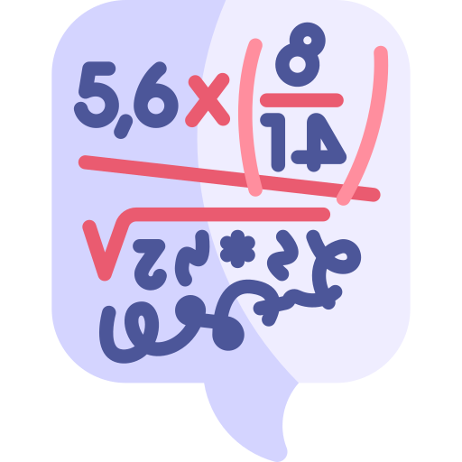
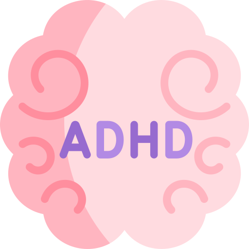
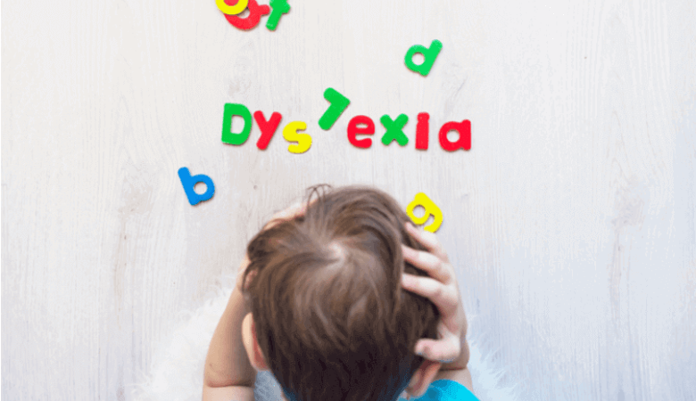
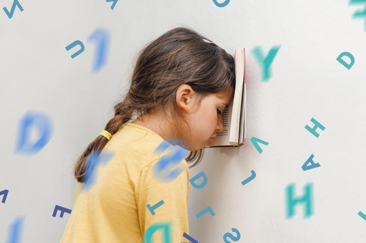
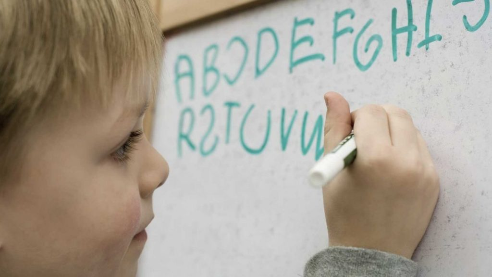
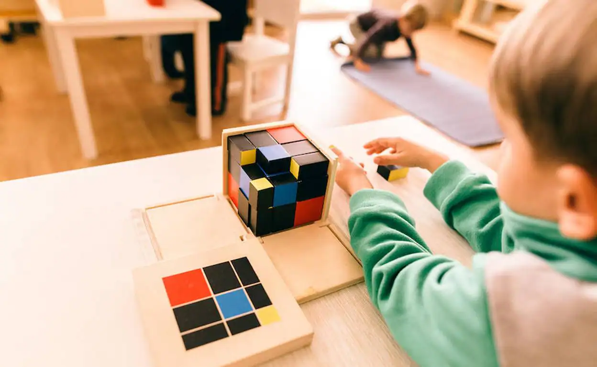

Actividades para Niños con Dificultades de aprendizaje
Actividades
Selecciona la actividad
Dislexia
Disgrafía

Discalculia
Atención dispersa
Concentración
Memoria a corto plazo

TDA y TDAH
Inteligencia emocional
Capacidades cognitivas
Autismo y asperger
Dislexia
La dislexia es un trastorno del aprendizaje que afecta la capacidad
de leer, escribir y comprender el lenguaje. Los niños con dislexia
pueden tener dificultades para reconocer y manipular los sonidos del
habla, identificar palabras y comprender la estructura de las
oraciones.
A continuación, se presentan 10 ejercicios para abordar estas
dificultades:
1. Ejercicio de segmentación de sílabas:
Pide al niño que liida una palabra en sílabas y pronuncie cada
sílaba por separado.
2. Actividad de discriminación auditiva:
Reproduce diferentes sonidos y pide al niño que identifique si
son iguales o diferentes.
3. Juego de palabras ocultas:
Coloca palabras dentro de un bloque de texto y pide al niño
que las encuentre.
4. Ejercicio de deletreo fonético:
Pide al niño que escriba palabras utilizando los sonidos de
las letras en lugar de las letras mismas.
5. Actividad de asociación imagen-palabra:
Presenta imágenes y pide al niño que identifique la palabra
que representa cada imagen.


6. Juego de rimas:
Pide al niño que encuentre palabras que rimen con una palabra
dada.
7. Ejercicio de lectura en voz alta:
Pide al niño que lea en voz alta un texto corto y luego
responda preguntas sobre su contenido.
8. Actividad de memoria visual:
Muestra una imagen durante unos segundos y pide al niño que la
describa o dibuje de memoria.
9. Juego de palabras cruzadas:
Proporciona pistas y pide al niño que complete las palabras
cruzadas.
10. Ejercicio de fluidez lectora:
Pide al niño que lea un texto en voz alta con un cronómetro y
trate de aumentar su velocidad de lectura en cada intento.
Disgrafía
La disgrafía es un trastorno de la escritura que afecta la habilidad
de los niños para producir escritura legible y fluida. Los niños con
disgrafía pueden tener dificultades para sostener el lápiz
correctamente, formar letras de manera consistente y organizar el
texto en el papel.
A continuación, se presentan 10 ejercicios para abordar estas
dificultades:
1. Ejercicio de caligrafía:
Practicar trazos básicos como líneas rectas, curvas y
círculos.
2. Ejercicio de copiado:
Copiar frases cortas y palabras para mejorar la precisión y
legibilidad de la escritura.
3. Ejercicio de espaciado:
Practicar dejar espacio adecuado entre palabras y letras.
4. Ejercicio de fluidez:
Escribir oraciones completas para mejorar la fluidez y
velocidad de escritura.
5. Ejercicio de repaso:
Repasar líneas punteadas para mejorar la coordinación
ojo-mano.

6. Ejercicio de dictado:
Escuchar y escribir palabras o frases para practicar la
escritura en tiempo real.
7. Ejercicio de organización:
Practicar la organización del texto en el papel, como la
alineación y distribución adecuada.
8. Ejercicio de creatividad:
Estimular la creatividad a través de la escritura de historias
cortas o poemas.
9. Ejercicio de corrección:
Revisar y corregir los errores de escritura para mejorar la
precisión.
10. Ejercicio de relajación:
Realizar ejercicios de relajación antes de escribir para
reducir la tensión y mejorar el control del lápiz.
Discalculia
La discalculia es una dificultad de aprendizaje que afecta la
habilidad para comprender y utilizar conceptos matemáticos. Los
niños con discalculia pueden tener dificultades para realizar
cálculos, entender el valor numérico y comprender conceptos
matemáticos básicos. Para abordar la discalculia, se pueden utilizar
diferentes ejercicios y actividades. A continuación, se presentan 10
ejercicios para abordar estas dificultades:
1. Identificar y clasificar números:
Pide al niño que identifique y clasifique números según su
valor o características específicas.
2. Contar en diferentes patrones:
Pide al niño que cuente hacia adelante y hacia atrás en
diferentes patrones, como de 2 en 2 o de 10 en 10.
3. Sumas y restas con manipulativos:
Utiliza manipulativos como bloques o fichas para que el niño
practique sumas y restas de manera visual y táctil.
4. Identificar secuencias numéricas:
Pide al niño que identifique y complete secuencias numéricas
que faltan, como 2, 4, __, 8, 10.
5. Resolver problemas verbales:
Presenta al niño problemas verbales que requieran el uso de
operaciones matemáticas para su resolución.
6. Ejercicio de dictado:
Escuchar y escribir palabras o frases para practicar la
escritura en tiempo real.
7. Ejercicio de organización:
Practicar la organización del texto en el papel, como la
alineación y distribución adecuada.
8. Ejercicio de creatividad:
Estimular la creatividad a través de la escritura de historias
cortas o poemas.
9. Ejercicio de corrección:
Revisar y corregir los errores de escritura para mejorar la
precisión.
10. Ejercicio de relajación:
Realizar ejercicios de relajación antes de escribir para
reducir la tensión y mejorar el control del lápiz.
Atención Dispersa
La atención dispersa es una dificultad de aprendizaje que se
caracteriza por la dificultad para mantener el enfoque y la
concentración en una tarea específica. Los niños con atención
dispersa pueden tener dificultades para seguir instrucciones,
completar tareas y prestar atención en clase.
A continuación, se presentan 10 ejercicios para abordar estas
dificultades:
1. Juego de la memoria:
Pide al niño que empareje tarjetas con imágenes relacionadas.
Esto ayudará a mejorar su enfoque y memoria visual.
2. Tareas de seguimiento visual:
Proporciona al niño actividades donde tenga que seguir líneas
o rutas con el dedo o un lápiz.
3. Juegos de atención selectiva:
Presenta al niño una serie de objetos o imágenes y pídele que
identifique solo los objetos de un color específico.
4. Rompecabezas:
Los rompecabezas ayudan a desarrollar la concentración y la
resolución de problemas. Proporciona al niño rompecabezas de
diferentes niveles de dificultad.
5. Actividades de clasificación:
Pide al niño que organice objetos o imágenes en categorías
específicas, fomentando así la atención y discriminación
visual.
6. Juegos de atención sostenida:
Proporciona al niño actividades que requieran mantener la
atención durante un período prolongado, como seguir las
instrucciones paso a paso para completar una manualidad.
7. Tareas de escucha activa:
Pide al niño que escuche una narración o una instrucción y
luego responda preguntas relacionadas con la información que
escuchó.
8. Actividades de movimiento:
Realiza actividades que combinen movimiento físico con tareas
cognitivas, como saltar mientras se resuelven problemas
matemáticos simples.
9. Juegos de atención liidida:
Proporciona al niño actividades que requieran prestar atención
a múltiples estímulos o tareas al mismo tiempo, como jugar al
Simon Dice.
10. Ejercicios de respiración y relajación:
Enseña al niño técnicas de respiración profunda y relajación
para ayudarlo a calmarse y centrarse cuando se sienta
abrumado.
Concentración
La concentración es una habilidad cognitiva crucial para el
aprendizaje efectivo. Para abordar las dificultades de aprendizaje
relacionadas con la concentración, se pueden realizar una variedad
de ejercicios y actividades.
A continuación, se presentan 10 ejercicios para abordar estas
dificultades:
1. Ejercicio de respiración profunda:
Pide al niño que respire profundamente varias veces para
ayudar a calmar la mente y mejorar la concentración.
2. Juego de memoria:
Utiliza tarjetas de memoria para que el niño las empareje, lo
que estimula la concentración y la memoria visual.
3. Laberintos:
Ofrece laberintos para que el niño resuelva, lo que requiere
atención y concentración.
4. Sopa de letras:
Proporciona sopas de letras para que el niño encuentre
palabras ocultas, lo que mejora la concentración visual y la
atención.
5. Rompecabezas:
Ofrece rompecabezas de diferentes niveles de dificultad para
que el niño los resuelva, lo que estimula la concentración y
la resolución de problemas.
6. Juego de atención selectiva:
Pide al niño que encuentre y marque un objeto específico en
una imagen compleja, lo que desarrolla la concentración
selectiva.
7. Ejercicios de seguimiento visual:
Proporciona actividades en las que el niño tenga que seguir
una línea o un patrón visual, mejorando así la concentración
visual.
8. Juego de Simon Dice:
Juega al juego de "Simón dice" para que el niño preste
atención y siga instrucciones precisas.
9. Ejercicios de atención sostenida:
Pide al niño que se concentre y mantenga la atención en una
tarea durante un período de tiempo determinado, como colorear
un dibujo detallado.
10. Juego de contar objetos:
Invita al niño a contar objetos en una imagen o en la
habitación, lo que fomenta la concentración y la atención.
Memoria a Corto Plazo
La memoria a corto plazo es una habilidad cognitiva fundamental que
nos permite retener y procesar información de forma temporal. Para
los niños con dificultades de aprendizaje, puede ser especialmente
desafiante desarrollar y mantener una memoria a corto plazo
efectiva.
A continuación, se presentan 10 ejercicios para abordar estas
dificultades:
1. Juego de memoria de parejas:
Coloca tarjetas boca abajo y pide al niño que encuentre las
parejas recordando la ubicación de las tarjetas previamente
reveladas.
2. Repetición de secuencias:
Pídele al niño que repita una secuencia de números, colores o
palabras después de que tú la hayas dicho.
3. Juego de Simon dice:
Sigue las instrucciones de "Simon dice" para recordar y
ejecutar diferentes acciones.
4. Ordenar objetos:
Pide al niño que ordene una serie de objetos en función de un
criterio específico, como tamaño, color o forma.
5. Juego de palabras encadenadas:
Pídele al niño que genere una lista de palabras relacionadas,
recordando las palabras anteriores en la secuencia.
6. Juego de atención auditiva:
Lee una lista de palabras y pide al niño que preste atención y
recuerde las palabras específicas.
7. Juego de atención visual:
Muestra una serie de imágenes y pide al niño que identifique y
recuerde las imágenes específicas.
8. Rompecabezas de memoria:
Pide al niño que arme un rompecabezas y recuerde la ubicación
de las diferentes piezas.
9. Juego de palabras cruzadas:
Pídele al niño que complete palabras cruzadas, recordando las
palabras que encajan en los espacios en blanco.
10. Juego de memoria de objetos ocultos:
Esconde varios objetos y pide al niño que recuerde la
ubicación de cada uno.
TDA y TDAH
El TDA se caracteriza por una dificultad para mantener la atención y
concentrarse en las tareas, lo que puede dificultar el aprendizaje y
la retención de información. Por otro lado, el TDAH también incluye
hiperactividad e impulsividad, lo que puede afectar aún más la
capacidad de los niños para concentrarse y seguir instrucciones.
A continuación, se presentan 10 ejercicios para abordar estas
dificultades:
1. Ejercicio de atención plena:
Pide al niño que se siente en silencio durante unos minutos y
se concentre en su respiración. Esto puede ayudar a mejorar la
capacidad de atención y reducir la distracción.
2. Juego de memoria:
Utiliza tarjetas con imágenes o palabras y pide al niño que
las recuerde en un orden específico. Este ejercicio puede
ayudar a mejorar la memoria y la concentración.
3. Rompecabezas o juegos de enfoque:
Proporciona al niño juegos que requieran atención y
concentración, como rompecabezas o juegos de construcción.
Estos juegos pueden ayudar a desarrollar habilidades de
enfoque y concentración.
4. Actividades de organización:
Enseña al niño técnicas de organización, como hacer listas de
tareas o utilizar agendas. Estas actividades pueden ayudar a
mejorar la planificación y la capacidad de seguir
instrucciones.
5. Ejercicios de relajación:
Enseña al niño técnicas de relajación, como la respiración
profunda o la visualización guiada. Estas técnicas pueden
ayudar a reducir la ansiedad y mejorar la capacidad de
concentración.
6. Juego de seguimiento visual:
Pide al niño que siga con la mirada un objeto o un punto en
movimiento. Esto puede ayudar a mejorar la coordinación visual
y la atención visual.
7. Actividades de lectura en voz alta:
Pide al niño que lea en voz alta y luego responda preguntas
sobre el texto. Esto puede ayudar a mejorar la comprensión
lectora y la atención.
8. Ejercicios de escritura:
Proporciona al niño ejercicios de escritura que requieran
atención y concentración, como copiar un texto o escribir una
historia. Estos ejercicios pueden ayudar a mejorar la
habilidad de escritura y la atención.
9. Juegos de atención y memoria:
Utiliza juegos de mesa o digitales que se centren en la
atención y la memoria, como el juego de memorama. Estos juegos
pueden ser liertidos y atractivos para el niño, al mismo
tiempo que trabajan en el desarrollo de estas habilidades.
10. Actividades físicas:
Fomenta la participación del niño en actividades físicas
regulares, como deportes o juegos al aire libre. El ejercicio
físico puede ayudar a mejorar la concentración y reducir los
síntomas del TDAH.
Inteligencia Emocional
La inteligencia emocional es una habilidad importante para abordar
las dificultades de aprendizaje en niños. Se refiere a la capacidad
de reconocer, comprender y gestionar las emociones propias y de los
demás.
A continuación, se presentan 10 ejercicios para abordar estas
dificultades:
1. Identificar emociones:
Pide al niño que identifique diferentes emociones a través de
imágenes o situaciones.
2. Registro de emociones:
Pídele al niño que mantenga un diario de emociones,
registrando cómo se siente en diferentes momentos del día.
3. Juego de roles:
Realiza juegos de roles donde el niño pueda practicar
identificando y expresando emociones.
4. Respiración profunda:
Enseña al niño técnicas de respiración profunda para ayudarlo
a calmarse en situaciones estresantes.
5. Escucha activa:
Fomenta la habilidad de escucha activa, animando al niño a
prestar atención a las emociones y sentimientos de los demás.
6. Solución de problemas:
Ayuda al niño a desarrollar habilidades de resolución de
problemas, considerando las emociones involucradas.
7. Empatía:
Fomenta la empatía enseñando al niño a ponerse en el lugar de
los demás y comprender sus emociones.
8. Manejo de la frustración:
Proporciona estrategias para manejar la frustración, como
contar hasta diez o dar un paso atrás antes de reaccionar.
9. Expresión emocional a través del arte:
Anima al niño a expresar sus emociones a través de actividades
artísticas como dibujar o pintar.
10. Mindfulness:
Enseña al niño técnicas de mindfulness para ayudarlo a estar
presente y manejar sus emociones.
Altas Capacidades Cognitivas
Las altas capacidades cognitivas se refieren a un nivel
excepcionalmente alto de habilidades intelectuales y cognitivas en
niños. Estos niños suelen mostrar una notable capacidad para
aprender, razonar y solucionar problemas. Sin embargo, también
pueden enfrentar dificultades específicas en el ámbito educativo. A
continuación, se presentan 10 ejercicios para abordar estas
dificultades:
1. Ejercicio de pensamiento lógico:
Resolver acertijos y rompecabezas que pongan a prueba la
capacidad de razonamiento y la atención al detalle.
2. Actividad de creatividad:
Pedir a los niños que generen ideas innovadoras para resolver
problemas cotidianos.
3. Ejercicio de memoria:
Memorizar secuencias de números o palabras y luego repetirlas
en orden.
4. Actividad de escritura:
Animar a los niños a escribir historias o ensayos sobre temas
que les interesen.
5. Ejercicio de atención:
Realizar actividades que requieran mantener la concentración
durante períodos de tiempo prolongados.

6. Juego de estrategia:
Jugar juegos de mesa que fomenten la planificación, el
análisis y la toma de decisiones.
7. Actividad de investigación:
Realizar proyectos de investigación sobre temas de interés y
presentar los hallazgos de manera organizada.
8. Ejercicio de resolución de problemas matemáticos:
Plantear problemas matemáticos desafiantes para que los niños
los resuelvan utilizando diferentes estrategias.
9. Actividad de debate:
Organizar debates sobre temas controvertidos para fomentar el
pensamiento crítico y la argumentación lógica.
10. Ejercicio de organización y planificación:
Pedir a los niños que creen un horario o un plan de estudio
para ayudarlos a administrar su tiempo de manera efectiva.
Autismo y Síndrome de Asperger
El autismo y el síndrome de Asperger son trastornos del espectro
autista que pueden presentar dificultades de aprendizaje en los
niños.
A continuación, se presentan 10 ejercicios para abordar estas
dificultades:
1. Ejercicio de seguimiento visual:
Pedir al niño que siga con la mirada un objeto en movimiento.
2. Ficha de emparejamiento:
Solicitar al niño que empareje objetos o imágenes que tienen
relación entre sí.
3. Ejercicio de secuenciación:
Pedir al niño que ordene una serie de imágenes o tarjetas
según una secuencia lógica.
4. Ficha de discriminación visual:
Presentar al niño una serie de imágenes y pedirle que
identifique la que es diferente.
5. Ejercicio de atención conjunta:
Realizar actividades que fomenten la interacción y atención
compartida entre el niño y el adulto.
6. Ficha de categorización:
Pedir al niño que clasifique objetos o imágenes en diferentes
categorías.
7. Ejercicio de habilidades sociales:
Practicar situaciones de juego o interacción social para
mejorar las habilidades sociales del niño.
8. Ficha de seguimiento de instrucciones:
Presentar al niño una serie de instrucciones sencillas y
pedirle que las siga.
9. Ejercicio de resolución de problemas:
Plantear al niño situaciones problemáticas y guiarlo en la
búsqueda de soluciones.
10. Ficha de reconocimiento de emociones:
Mostrar al niño diferentes expresiones faciales y pedirle que
identifique la emoción correspondiente.